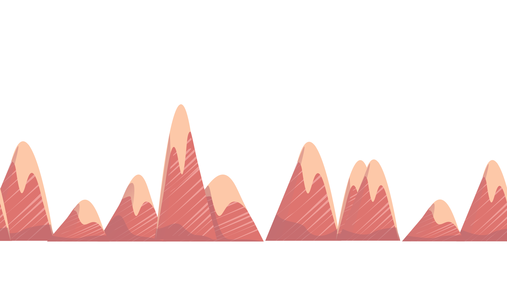
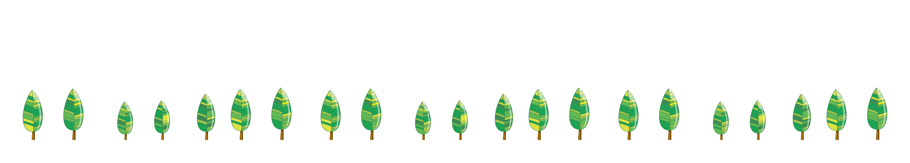

Note:
By using this plugin, we expect that you know the limitations of horizontal parallax scrolling, for instance if the screen height is smaller than the content, the content will be clipped, but this plugin is intended anyway for webdesigners and -developers, so we think that you know what you're doing. ;-)
4.) Order the layers via z-index (Note that it is recommended that the front layers are wider than the ones in the back) 5.) In your javascript, use this code (the selectors refer to the elements that you desire to be scrolled):
jInvertScroll - A lightweight jQuery horizontal Parallax Plugin
What is it?
It's a lightweight plugin for jQuery that allows you to move in horizontal with a parallax effect while scrolling down.
It's extremely easy to setup and requires nearly no configuration.
Note:
By using this plugin, we expect that you know the limitations of horizontal parallax scrolling, for instance if the screen height is smaller than the content, the content will be clipped, but this plugin is intended anyway for webdesigners and -developers, so we think that you know what you're doing. ;-)
Quickstart
1.) Include the css file, jQuery and the Plugin
2.) Create the desired elements that you want to scroll (You can create normal divs, that contain other elements, images, videos...)
3.) Assign following attributes to the elements you just created:
\nposition: fixed;\t// All scrollable elements have to be position:fixed bottom: 0;\t// Make it stick to the bottom (or top) width: xxxxpx;\t// I recommend to assign the width in px, prevents preloading issues
4.) Order the layers via z-index (Note that it is recommended that the front layers are wider than the ones in the back) 5.) In your javascript, use this code (the selectors refer to the elements that you desire to be scrolled):
\n$.jInvertScroll(['yourselector1', 'yourselector2'...]);
Download
You can download the script as a zip file here:
jInvertScroll.zip
..or get it from our GitHub repository.